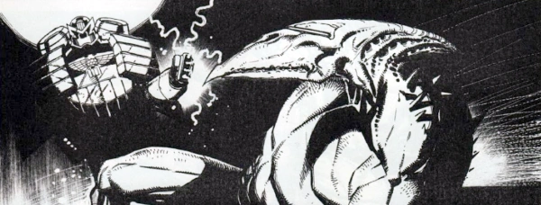

An international group called the STAR Judges are attempting to root out planetary corruption, but end up fighting human/pterodactyl hybrids of former comrades. The concept of a militarized off-planet wing of the Justice Department was first explored in The Corps and then much later (and to greater acclaim) in Insurrection.
Art by Colin MacNeil
| Story Title | Parts | Pages | w indicates a wraparound coverCovers | Year(s) | Issues | Writer | Artist | Colourist | Letterer |
|---|---|---|---|---|---|---|---|---|---|
| Maelstrom | 8 | + 8 credit pages64 | M2.79: Colin MacNeil 1 | 1995 | Reprints: X17M2.73-M2.80 | Robbie Morrison | Colin MacNeil | [b&w] | Ellie de Ville |
| >> Features << | |||||||||
| Special Feature: Maelstrom - The Lost Designs | 1 | 2 | 0 | 1995 | M2.79 | editorial | Chris Halls Ted Naifehvarious | <-- | n/a |
| [Original designs] | 1 | 1 | 0 | 2006 | X17 | n/a | Chris Halls | <-- | n/a |
| >> Floating Covers << | |||||||||
Linked to The CorpsThe Law at War | ~ | ~ | 1 | 2006 | X17 | n/a | Dylan Teague | <-- | n/a |
| year | episodes | pages |
| 1985 | 0 | 0 |
| 1986 | 0 | 0 |
| 1987 | 0 | 0 |
| 1988 | 0 | 0 |
| 1989 | 0 | 0 |
| 1990 | 0 | 0 |
| 1991 | 0 | 0 |
| 1992 | 0 | 0 |
| 1993 | 0 | 0 |
| 1994 | 0 | 0 |
| 1995 | 8 | 64 |
| 1996 | 0 | 0 |
| 1997 | 0 | 0 |
| 1998 | 0 | 0 |
| 1999 | 0 | 0 |
| 2000 | 0 | 0 |
| 2001 | 0 | 0 |
| 2002 | 0 | 0 |
| 2003 | 0 | 0 |
| 2004 | 0 | 0 |
| 2005 | 0 | 0 |
Comic strip data (excludes other content):